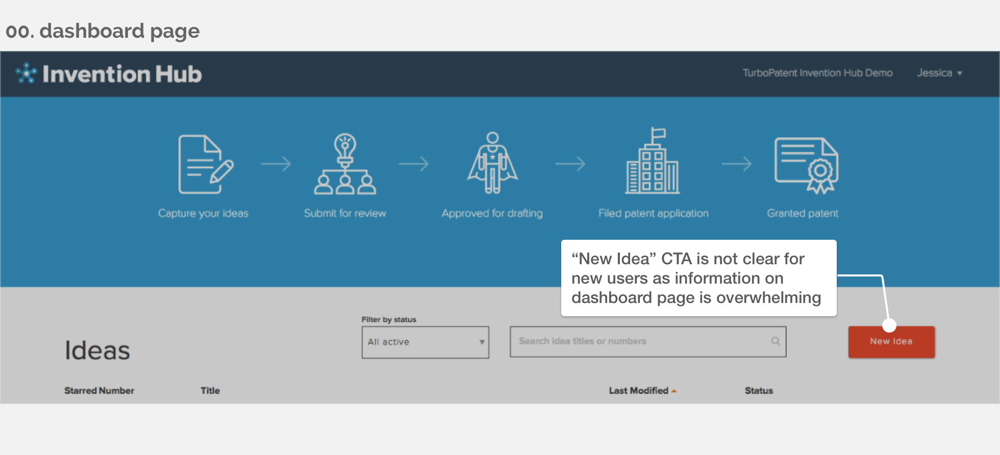

PROCESS

Process Timeline
— Process 1 of 4 —
Emphasize
User Research
Since the patent industry is very new to me, in addition to online research, I led the stakeholder meeting and baseline testing to directly understand the users.
Stakeholder meeting: To understand the product and business goals, I researched the patent application process and interviewed the Chief Product Officer who has worked with the users directly.
Baseline testing: Then, I designed the baseline testing which covers interview questions and scenario-and-tasks testing to:
- set user performance measures prior to any design changes
- understand users’ behaviors and needs
- identify potential design concerns
The testing mainly covered two sections:
1. Interview questions: Based on the user interview, I was able to create two user personas as a reference asset for our further design: the inventor and the product manager.
{kind=link}
Persona #1: Inventors

Persona #2: Product manager
2. Scenario and tasks: I listed out six tasks for participants to establish the baseline measurement for the future design changes and to figure out the design problems. The task completion task was 34% at average.

Image: Result of scenario-and-task testing
{kind=link}


— Process 2 of 4 —
Define
Reframe Project Scope
By conducting the Affinity Diagram, I defined the project to solve the existing design problems.
Affinity diagram: After collecting all the user feedback, I used the Affinity Diagramming exercise to organize and analyze the data. The problems were divided into four categories: Navigation, Data Entry, Drawing, and Collaboration. They were separated into different priority levels in accordance with how frequent testers mentioned about the issue. I then scoped the project based on the priority levels and mainly focused on solving the two problems of:
- how to make the input more intuitive?
- how to help users collaborate on ideas with others?


Image: Affinity Diagram Exercise
— Process 3 of 4 —
Ideate
Information architecture: I re-organized and sketched the existing information architecture based on users' feedback.

Image: Sketched Information Architecture for Invention Hub Redesign
— Process 4 of 4 —
Prototype & Iterate
Paper prototype
To make sure the redesign meets users' needs, I built the paper prototype. Then, I tested with five participants who are in either engineering or creative industry and have their own side-projects or startup. The cardboard was customized to provide a more smooth testing experience on paper prototype.

Dashboard page (for new users)

Idea Description page
{kind=link}
“It's an easy-to-use tool to capture my ideas and discuss them with colleagues and friends.”
Participant 3, Back-end Engineer
Hi-fidelity Prototype
After collecting the feedback from the test users, I iterated the design and created the hi-fi prototype.
RESULTS
Key features
I redesigned six features for the final prototype to meet users' expectation and it increased the task completion rate by 150%.